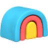

MonicaИИ-ассистент
«Monica» представлен в разделе «ИИ-ассистент». При выборе проверьте нужную операцию и условия работы с результатом.
Раздел «Поиск информации»: варианты ИИ для этой задачи, описания возможностей и переходы к обзорам. Сравните несколько решений на одинаковом примере.
Опишите вопрос и сведения, которые уже известны, чтобы подготовить план исследования. Инструкция Perplexity Sonar в Молекуле показывает вопросы и гипотезы; это подготовка поиска, а найденные материалы и их достоверность нужно проверить отдельно, без вымышленных ссылок.
Подготовь план исследования вопросов покупателей о хранении книг. Есть только мои обращения клиентов. Раздели известное и гипотезы, укажи направления поиска. Не выдавай предположения за найденные данные и не придумывай ссылки.

«Monica» представлен в разделе «ИИ-ассистент». При выборе проверьте нужную операцию и условия работы с результатом.
«Neeva» помогает находить материалы по вопросу.
Для «NYT summary» сначала определите свою задачу и требуемый результат. Карточка относится к направлению «Суммаризация».
«Pocket LLM» помогает организовать работу с базой знаний.
Для «SID Search» сначала определите свою задачу и требуемый результат. Карточка относится к направлению «Чат-боты и ассистенты».
The AI Reports представляет каталог ИИ-приложений с обзорными материалами и оценками продуктов. Сайт собирает разборы инструментов и сводит их в сравнительное представление. Его основное назначение связано с поиском подходящего приложения через описание возможностей, обзор и предлагаемую оценку, а не с выполнением самой генеративной задачи.
Tinq.ai объединяет документы, корпоративные вики и другие источники знаний, чтобы использовать их как контекст для ИИ-ассистентов. Рабочее пространство предназначено для поиска и подключения данных к контексту ответа. Перед подключением рабочих файлов стоит проверить поддерживаемые источники и порядок предоставления доступа.
Vectara предоставляет инструменты для разработки приложений с диалогом на естественном языке. В качестве сценария описано Asknews: оно выдаёт актуальный новостной материал по вопросу пользователя и позволяет фильтровать результаты. Продукт связывает создание разговорного интерфейса с поиском подходящих сведений и настройкой выдачи.
«AiToolHunt» представлен в разделе «Поиск информации». При выборе проверьте нужную операцию и условия работы с результатом.
Сравнивать «AstroGPT» с другими инструментами раздела «Личный помощник» удобнее на одинаковом исходном материале.
«Channel1 AI» представлен в разделе «Чат-боты и ассистенты». При выборе проверьте нужную операцию и условия работы с результатом.
ChatPDF позволяет задавать вопросы по PDF и сверять ответ с местом в документе. Работа с несколькими файлами помогает собрать материалы одной задачи, но цитаты, версии и значимые числа нужно проверять в исходнике перед использованием вывода.

Для «Clay 2.0» сначала определите свою задачу и требуемый результат. Карточка относится к направлению «Автоматизация».
ConfTalks предлагает сокращённые изложения выступлений на технологических конференциях, включая темы разработки, ИИ и криптовалют. Такой формат помогает выбрать доклад для подробного знакомства. Перед использованием отдельного вывода проверьте оригинальное выступление: краткая версия может не передавать условия примера, ограничения исследования или позицию автора целиком.
Explore AI помогает находить видеоматериалы по различным темам. В описанных направлениях есть научные и технологические вопросы, космос и сведения о устройствах. Пользователь обращается к поисковому инструменту, чтобы подобрать контент для интересующей темы и продолжить знакомство с найденными видео.
«Feedly Leo» представлен в разделе «Поиск информации». При выборе проверьте нужную операцию и условия работы с результатом.
Для «Gerev» сначала определите свою задачу и требуемый результат. Карточка относится к направлению «Поиск информации».
«MeaningIn.Chat» представлен в разделе «Чат-боты и ассистенты». При выборе проверьте нужную операцию и условия работы с результатом.
Minerva AI предназначен для ответов на исследовательские вопросы учёных и специалистов. Помощник использует машинное обучение и обработку естественного языка. Его назначение связано с разговорным обращением к исследовательской теме: пользователь формулирует вопрос, а система готовит содержательный ответ средствами заявленных технологий ИИ.
Semantic Scholar помогает искать научные публикации, просматривать их связи и получать короткие ИИ-аннотации. Полный текст доступен через найденные источники, а часть функций работает только для отдельных статей.
Для «Sona» сначала определите свою задачу и требуемый результат. Карточка относится к направлению «Книги».
Сравнивать «Talk to Books (Google)» с другими инструментами раздела «Книги» удобнее на одинаковом исходном материале.
Для «TinEye» сначала определите свою задачу и требуемый результат. Карточка относится к направлению «SEO-инструменты».
Для «Twelve Labs» сначала определите свою задачу и требуемый результат. Карточка относится к направлению «Видео».
«Undermind AI» разбирает данные для рабочего анализа.
Для «ZipSmart» сначала определите свою задачу и требуемый результат. Карточка относится к направлению «Поиск информации».
Для «AI-Hunter» сначала определите свою задачу и требуемый результат. Карточка относится к направлению «Поиск информации».
Сравнивать «CalendarScan» с другими инструментами раздела «Поиск информации» удобнее на одинаковом исходном материале.
«Fact Check Anything» работает с материалами для социальных площадок.

Glean используют, чтобы исследовать тему и разбирать найденную информацию. Ещё одно направление работы: обрабатывать голосовые обращения.
Для «Lumina Chat» сначала определите свою задачу и требуемый результат. Карточка относится к направлению «Чат-боты и ассистенты».
«Mixpeek» представлен в разделе «Анализ данных». При выборе проверьте нужную операцию и условия работы с результатом.

Perplexity ищет сведения и собирает ответ с ссылками на найденные материалы. Сервис подходит для первичного исследования вопроса, сравнения условий и подготовки списка источников для проверки.
«Personalized Energy» представлен в разделе «Поиск информации». При выборе проверьте нужную операцию и условия работы с результатом.
Сравнивать «SOMA» с другими инструментами раздела «Анализ данных» удобнее на одинаковом исходном материале.
«Theee AI» представлен в разделе «Поиск информации». При выборе проверьте нужную операцию и условия работы с результатом.
Сравнивать «There’s An AI For That» с другими инструментами раздела «Поиск информации» удобнее на одинаковом исходном материале.
Wondrful помогает аналитикам разбирать документы и получать ответы на вопросы к их содержанию. Инструмент ориентирован на выделение информации из подходящих материалов. Для проверки задайте вопрос с известным ответом и сравните итог с нужным фрагментом; при объединении документов важно не смешивать периоды, организации и условия разных источников.
«ZeroGPT» проверяет признаки происхождения или заимствования текста.
Для «AIcyclopedia» сначала определите свою задачу и требуемый результат. Карточка относится к направлению «Промты и промт-инжиниринг».
Для «Aitoolmall.com» сначала определите свою задачу и требуемый результат. Карточка относится к направлению «Поиск информации».
Для «ArxivGPT» сначала определите свою задачу и требуемый результат. Карточка относится к направлению «Суммаризация».
«Byway» помогает подготовить маршрут поездки.
Для «Charlie News» сначала определите свою задачу и требуемый результат. Карточка относится к направлению «Суммаризация».
GPT-Zip.Link сокращает веб-материал перед его использованием в запросах к языковой модели. Инструмент интегрируется с API OpenAI и предназначен для обработки входного содержимого веб-приложений. Такая подготовка связывает сжатие текста с последующей работой ИИ-функций в выбранном программном продукте.

HARPA AI относится к инструментам, которые помогают связывать действия в автоматизированный процесс. Ещё одно направление работы: собирать видеосцену по описанию или визуальному исходнику.
Сравнивать «HelpHub» с другими инструментами раздела «Чат-боты и ассистенты» удобнее на одинаковом исходном материале.
«Hotbot» помогает находить материалы по вопросу. «Hotbot» помогает упорядочить задачи проекта.
Страница 2 из 5